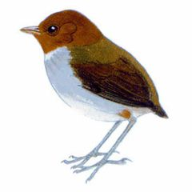
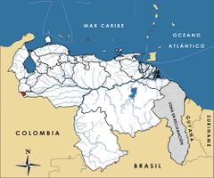

Grallaricula cucullata
| Ponchito cabecicastaño | |
|---|---|
|  | |
| Riesgo de extinción | |
 En peligro (UICN) | |
| Clasificación científica | |
| Reino: | Animalia |
| Filo: | Chordata |
| Clase: | Aves |
| Orden: | Passeriformes |
| Familia: | Grallariidae |
| Género: | Grallaricula |
| Especie: | Grallaricula cucullata |
| Nombre binomial | |
|
Grallaricula cucullata Sclater, 1856 | |
| Distribución | |
|
 Mapa de distribución de Grallaricula cucullata | |
Contenido
Información de Evaluación
- Categoría y Criterio Regional: En Peligro B1ab(iii)+2ab(iii); C2a(ii)
- Fecha de Evaluación Regional: 2015
- Evaluadores: Jesús Morales-Campos y Ariany García-Rawlins
- Categoría y Criterio Global: Vulnerable B1ab(i,ii,iii,v);C2a(i)
Justificación
Evaluaciones Previas
1999: Insuficientemente Conocido (actualmente conocido como DD)
2008: Datos Insuficientes (DD)
Información General
Nombres comunes
Ponchito cabecicastaño, ponchito encapuchado, Hooded Antpitta.
Notas taxonómicas
Sinónimos
Descripción
Ave pequeña de la familia de los hormigueritos que mide 10 cm de longitud, cuya cabeza rojiza es su característica principal. La cabeza y la nuca son de color castaño rojizo con el pico anaranjado, en contraste con el dorso y la cola, ambos de un tono pardo oliváceo oscuro. El pecho y la parte ventral son amarillentos pálidos, con laterales gris oliváceo; presenta una mancha blanca en la parte inferior de la garganta (Phelps Jr. y Meyer de Schauensee 1979, Collar et al. 1992, Hilty 2003, Restall et al. 2007, Krabbe et al. 2015b).
Distribución
Grallaricula cucullata es endémica de Colombia y Venezuela, y su distribución geográfica está asociada a pequeñas áreas aisladas. La subespecie Grallaricula cucullata cucullata se ubica en pocas localidades del oeste, centro y este de los Andes de Colombia. En Venezuela habita la subespecie Grallaricula cucullata venezuelana, la cual ha sido descrita de la Hacienda La Providencia en río Chiquito del Táchira (Phelps y Phelps Jr. 1956), y se conoce solamente de esta pequeña localidad. Habita selvas pluviales entre 1800 y 2135 m (Krabbe et al. 2015b), pero en nuestro país los únicos ejemplares provienen de la localidad tipo a los 1800 m de altitud. Reportes para el río Oirá, frontera con Colombia, Apure (Ridgely y Tudor 1994, Hilty 2003) son erróneos, referidos más bien al atrapamoscas Pseudotriccus ruficeps.
- Sistema: Terrestre
- Bioregión:
- Intervalo altitudinal (m): 2135-1800
- Endémica: No
Situación
Grallaricula cucullata es una de las aves más enigmáticas del país, la subespecie Grallaricula cucullata venezuelana es desconocida en vida. Existen dos ejemplares colectados en 1955 (Phelps y Phelps Jr. 1956). Desde hace sesenta años no hay registros adicionales. Aunque los datos existentes impiden calcular con precisión el tamaño poblacional, se ha sugerido que el parque nacional El Tamá podría albergar una población viable de la subespecie. En Colombia se considera de Preocupación Menor (Renjifo et al. 2014). Investigaciones recientes en el vecino país sugieren que su área de ocupación es más continua y de mayor extensión que el estimado original, y en Venezuela se considera que está presente en una extensión menor que 500 km2. Se calcula que las poblaciones colombianas y venezolanas combinadas, suman en total entre 2500 y 10.000 individuos (Collar et al. 1992, BirdLife International 2000, BirdLife International 2015). A escala global esta especie ha sido clasificada Vulnerable (BirdLife International 2015), y con un mayor conocimiento en territorio colombiano podría no estar amenazada a nivel global (Krabbe et al. 2015b).
- EOO (km2): Temporalmente sin información
- AOO (km2): Temporalmente sin información
- Tendencia Poblacional: Decreciendo
Amenazas
La principal amenaza que enfrenta la subespecie en Colombia es la degradación ambiental por ganadería, explotación forestal, agricultura, cultivos ilícitos de amapola y construcción de carreteras. De hecho, la localidad tipo fue deforestada y destruida a principios del siglo XX (Rodríguez, J. P. y Rojas-Suárez 2003). En el caso de Venezuela la situación es similar, ya que gran parte del área de río Chiquito ha sido transformada en plantaciones de café, y entre 1900 y 2200 m de altitud, el hábitat ha sido modificado por cultivos de papas y otros vegetales, aunque la especie ha sido reportada en ecosistemas secundarios o reforestados (Collar et al. 1992, Renjifo et al. 2002). Aun así, en esta zona de los Andes venezolanos los procesos de deforestación son acelerados y alarmantes, y en general la región está considerada como una de las más amenazadas del país, incluso dentro del parque nacional, donde existen sectores dedicados a usos no compatibles con su condición de área protegida, como cafetales, entre otros cultivos, y ganadería, que en conjunto afectan casi 17% de la superficie total del parque. Existen fuertes presiones para la ampliación de estas actividades, especialmente en las áreas boscosas de los sectores Nula, Cutufí y Burgua. Además, son numerosos los incendios forestales, y existen otros problemas asociados a su ubicación fronteriza, como invasiones, contrabando, personas indocumentadas, narcotráfico y guerrilla (Rodríguez, J. P. y Rojas-Suárez 2003, Freile y Santander 2005, Restall et al. 2007).
Conservación
La principal garantía de sobrevivencia para la subespecie venezolana está asociada al parque nacional El Tamá, el cual abarca hábitats apropiados cerca de la localidad tipo, por lo que sería prioritario fortalecer el manejo de esta área (Rodríguez, J. P. y Rojas-Suárez 2003). El Tamá es una zona de gran importancia biológica por la presencia de muchas especies endémicas y amenazadas, y está considerada como un Área de Importancia para la Conservación de las Aves (Pacheco Maica) (Freile y Santander 2005, Restall et al. 2007). Se sugiere desarrollar investigaciones sobre su situación actual y la de otras especies amenazadas de la zona, en especial la de <www.animalesamenazados.provita.org.ve/content/hormiguero-tororoi-tachirense">Grallaria chthonia</a>. A escala internacional se ha alertado sobre la necesidad de cuantificar su población e investigar la ecología de la pobremente conocida subespecie venezolana (BirdLife International 2000).
Autorías
Autores originales
Christopher J. Sharpe
Colaboradores
Ilustrador
Robin Restall
Referencias
- BirdLife International (2000). Threatened Birds of the World. The official source for birds on the IUCN Red List. Lynx Edicions. Barcelona, España. 864 pp.
- BirdLife International. (2015). IUCN Red List for birds. Disponible en www.birdlife.org, consultada el 08/07/2015.
- Collar, N. J., Gonzaga, L. P., Krabbe, K., Nieto, A. M., Naranjo, L. G., Parker III, T. A. y Wege, D. C. (1992). Threatened Birds of the Americas. The ICBP/IUCN Red Data Book (3rd ed. part 2). International Council for Bird Preservation. Cambridge. 1150 pp.
- Freile, J. F. y Santander, T. (2005). Áreas Importantes para la Conservación de las Aves en Ecuador. Páginas: 283-370. En: Boyla, K. y Estrada, A. (Eds.). Áreas importantes para la conservación de las aves en los Andes tropicales: sitios prioritarios para la conservación de biodiversidad. BirdLife Internacional. Quito, Ecuador.
- Hilty, S. L. (2003). Birds of Venezuela, second edition. Princeton University Press. Princeton, NJ, USA. 878 pp.
- Krabbe, N. K., Schulenberg, T. S. y Sharpe, C. J. (2015b). Hooded Antpitta (Grallaricula cucullata). En: del Hoyo, J., Elliott, A., Sargatal, J., Christie, D. A. y de Juana, E. (Eds.). Handbook of the Birds of the World Alive. Lynx Edicions. Barcelona. (Descargado de www.hbw.com/node/56913, el 20/07/2015).
- Phelps Jr., W. H. y Meyer de Schauensee, R. (1979). Una guía de las Aves de Venezuela. Gráficas Armitano. Caracas. 484 pp.
- Phelps, W. H. y Phelps Jr., W. H. (1956). Five new birds from Río Chiquito, Táchira, Venezuela and two extensions of ranges from Colombia. Proceedings of the Biological Society of Washington 69: 157-166.
- Renjifo, L. M., Franco-Maya, A. M., Amaya-Espinel, J. D., Kattan, G. H. y López-Lanús, B. (2002). Libro Rojo de Aves de Colombia. Instituto Alexander von Humboldt, Ministerio del Medio Ambiente. Bogotá, Colombia.
- Renjifo, L. M., Gómez, M. F., Velásquez-Tibatá, J., Amaya-Villarreal, A. M., Kattan, G. H., Amaya-Espinel, J. D. y Burbano-Girón, J. (2014). Libro rojo de aves de Colombia, Volumen I: bosques húmedos de los Andes y la costa Pacífica. Editorial Pontificia Universidad Javeriana & Instituto Alexander von Humboldt. Bogotá,Colombia. 465 pp.
- Restall, R., Rodner, C. y Lentino, M. (2006). Birds of Northern South America, an Identification Guide. Volume 1: Species Accounts. Volume 2: Plates and Maps. Yale University Press. New Haven, USA and London, UK. 880 pp.
- Ridgely, R. S. y Tudor, G. (1994). The Birds of South America. Volume II: The Suboscine Passerines. University of Texas Press. Austin, Texas, USA.
- Rodríguez, J. P. y Rojas-Suárez, F. (1999). Libro Rojo de la Fauna Venezolana, segunda edición. PROVITA, Fundación Polar. Caracas. 444 pp.
- Rodríguez, J. P. y Rojas-Suárez, F. (2003). Libro Rojo de la Fauna Venezolana (2a ed. reim.). Provita, Fundación Polar. Caracas. 472 pp.
- Rodríguez, J. P. y Rojas-Suárez, F. (Eds.) (2008). Libro Rojo de la Fauna Venezolana, tercera edición. Provita y Shell Venezuela, S. A. Caracas, Venezuela. 364 pp.
- Sharpe, C. J. (2015). Ponchito cabecicastaño, Grallaricula cucullata. En: J.P. Rodríguez, A. García-Rawlins y F. Rojas-Suárez (eds.) Libro Rojo de la Fauna Venezolana. Cuarta edición. Provita y Fundación Empresas Polar, Caracas, Venezuela. Recuperado de: animalesamenazados.provita.org.ve/content/ponchito-cabecicastano